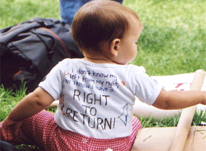

homepage

Opinion and Analysis of the Current Events
- The Only Alternative
Edward Said
Added 11 March 2001
- Joseph Revisited
Israel Shamir
Added 11 March 2001
- Unholy Alliance
Dr. Hanan Ashrawi
Added 11 March 2001
- THE STORY BEHIND A BUS STOP
Arjan El Fassed
Added 18 February 2001
- Lawlessness and the Rule of Law
Dr. Hanan Ashrawi
Added 18 February 2001
- KID SISTER
Israel Shamir
Added 18 February 2001
- The Intifada is not a Palestinian picnic
Hanna Nasir, President of Birzeit University
Added 18 February 2001
- Palestinian Citizens and the Elections for Prime Minister
Background and Political Analysis:
Jafar Farah, Mossawa Centre
Added 11 February 2001
- The legacy of Ariel Sharon
Robert Fisk
Added 11 February 2001
- Yesterday's Man
Dr. Hanan Ashrawi
Added 11 February 2001
- Rape of Dulcinea
Israel Shamir
Added 11 February 2001
- TRANSCRIPT OF NOAM CHOMSKY'S LECTURE
"THE CURRENT CRISIS IN THE MIDDLE EAST:
WHAT CAN WE DO?"
Noam Chomsky
Added 11 February 2001
- What Americans Can Do for Justice
Samah Jabr
Added 11 February 2001
- Are Palestinians Kids Real Kids and their Parents Real Parents?
Ghassan Andoni
Added 11 February 2001
- Enough is Enough
Edward Said
Added 3 February 2001
- Trying Again and Again
Edward Said
Added 3 February 2001
- Palestinian Position Regarding Clinton's Proposals
Akram Haniyya
Middle East Media Research Institute
Added 3 February 2001
- The Barak Government's Murky "White Paper"
Disinformation, Deception, and Degradation
Dr. Hanan Ashrawi
Miftah
Palestine
Added 9 December 2000
- People of the Intifada: The Palestinian Struggle
for Freedom and Independence
Dr. Majed Nassar
Union of Health Work Committees
Palestine
Added 9 December 2000
- Letter from Dr. Majed Nassar
Union of Health Work Committees
Palestine
Added 14 November 2000
- Long Walk to Freedom
By Juman Odeh MD, MPH
The Director of the Palestinian Happy Child Center
Added 14 November 2000
- Modified excerpts of the United States of America
Declaration of Independence
Dr. Majed Nassar, Union of Health Work Committees
Added 11 November 2000
- Al-Aqsa Intifada: The Refusal to Surrender
Dr. Majed Nassar, Union of Health Work Committees
Nassar Ibrahim, Alternative Information Center
Added 6 November 2000
- American Zionism (3)
Edward Said
added: November 6, 2000
- Institutionalizing Economic Resistance
to Israeli Occupation
Sam Bahour
added: November 2, 2000
- The Impact on the Palestinian Economy of the
Recent Confrontations, Mobility Restrictions and Border Closures
OFFICE OF THE UNITED NATIONS SPECIAL CO-ORDINATOR
added: November 2, 2000
- The Intifada's military lessons
Saleh Abdel Jawad
added: October 28, 2000
- Israel and South Africa: In their Own Words
Ali Abunimah
added: October 28, 2000
- Al-Aqsa Intifada
Noam Chomsky
added: October 26, 2000
- Green Light to Slaughter
Tanya Reinhardt
added: October 26, 2000
- No, We Are Not Who You Thought We Are
Musa Budeiri
Ha'aretz
October 24, 2000
- To the Children of the Palestinian People
Bishop Hilarion Cappucci
The Bishop of Jerusalem - in Exile
October 23, 2000
- After the Sharm al-Shaykh Summit: An Armed and
Temporary Truce
Mouin Rabbani
Ramallah
MERIP Press Information Note 34, "After the Sharm al-Shaykh Summit: An Armed
and Temporary Truce,"
added: October 17, 2000
- Israel's plan for Palestine, a la Pretoria
Scott Burchill
(The Age (Australia), 18 October 2000)
Australia
added: October 22, 2000
- The Fallacy of Peace in the Middle East
by Osama Shabaneh
United States
added: October 22, 2000
- Anatomy of Racism
by Dr. Hanan Ashrawi
18 October 2000
Palestine
added: October 19, 2000
- Turning Point in the Palestinian Struggle
Dr. Majed Nassar/ Nassar Ibrahim
13.10.2000
Palestine
added: October 18, 2000
- Days of Misery
By Arjan El Fassed
Hollland
added: October 17, 2000
- Palestinian Right vs Zionist Might
By Nizar Sakinini
added: October 17, 2000
- ISRAEL: Your Only Choice
By Sam Bahour,
Al-Bireh, Palestine
added: October 14, 2000
- A Tragic Reversal: Madeleine Albright¹s View
of Reality
By Dr. Hanan Ashrawi
Jerusalem, Palestine
added: October 14, 2000
- The End of Oslo
By Professor Edward Said
USA
added: October 14, 2000
homepage